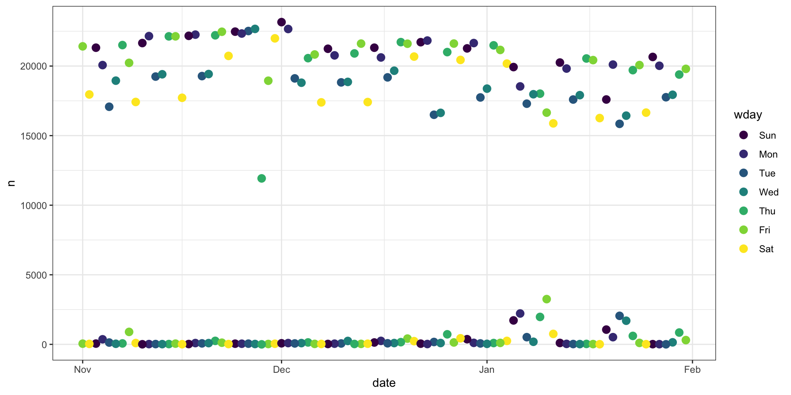

Working with Apache Arrow in R
2025-11-20
Outline
- Intro to Arrow
- Basic functionality R to and from Arrow
Resource:
What is Apache Arrow?
language-independent columnar memory format for fast data access and interoperability
fast I/O (locally: CSV, Parquet, Arrow; remotely: aws S3, Google Cloud, Arrow Flight)
dataset queries without loading data into memory
zero-copy data sharing between Python and R
a dplyr interface for on-disk data
integration with databases: DuckDB, Spark, Polars
Installing Arrow
Check version:
Arrow package version: 21.0.0
Capabilities:
acero TRUE
dataset TRUE
substrait FALSE
parquet TRUE
json TRUE
s3 TRUE
gcs TRUE
utf8proc TRUE
re2 TRUE
snappy TRUE
gzip TRUE
brotli FALSE
zstd TRUE
lz4 TRUE
lz4_frame TRUE
lzo FALSE
bz2 FALSE
jemalloc FALSE
mimalloc TRUE
Memory:
Allocator mimalloc
Current 0 bytes
Max 0 bytes
Runtime:
SIMD Level avx2
Detected SIMD Level avx2
Build:
C++ Library Version 21.0.0-SNAPSHOT
C++ Compiler AppleClang
C++ Compiler Version 14.0.3.14030022Arrow Data Structures in R
Arrow provides two main structures:
- Arrow Table — immutable, columnar, in-memory
- Arrow Dataset — lazily evaluated collections of files (CSV/Parquet)
Creating an Arrow Table
Converting between Arrow and R
Reading and Writing Files with Arrow
- CSV
csv_data <- read_csv_arrow("bigfile.csv")
write_csv_arrow(csv_data, "output.csv")- Parquet
parquet_data <- read_parquet("data.parquet")
write_parquet(csv_data, "out.parquet")Example: Flight Data
Reading with read_csv in R:
user system elapsed
76.641 4.008 17.168 Reading with Arrow:
user system elapsed
7.583 1.471 9.023 Arrow Datasets
user system elapsed
0.054 0.178 0.217 FileSystemDataset with 1 csv file
120 columns
Year: int64
Quarter: int64
Month: int64
DayofMonth: int64
DayOfWeek: int64
FlightDate: date32[day]
Marketing_Airline_Network: string
Operated_or_Branded_Code_Share_Partners: string
DOT_ID_Marketing_Airline: int64
IATA_Code_Marketing_Airline: string
Flight_Number_Marketing_Airline: int64
Originally_Scheduled_Code_Share_Airline: null
DOT_ID_Originally_Scheduled_Code_Share_Airline: null
IATA_Code_Originally_Scheduled_Code_Share_Airline: null
Flight_Num_Originally_Scheduled_Code_Share_Airline: null
Operating_Airline: string
DOT_ID_Operating_Airline: int64
IATA_Code_Operating_Airline: string
Tail_Number: string
Flight_Number_Operating_Airline: int64
...
100 more columns
Use `schema()` to see entire schemaDatasets provide lazy, on-disk querying across directories of CSV/Parquet files.
Using dplyr with Arrow
collect() pulls results into R.
Arrow evaluates queries efficiently in C++.
Example: daily flight summary
Daily flights
Data format parquet
Arrow automatically handles partitions:
data/
flights/
Year=2024/
Month=11/
Month=12/
Year=2025/
Month=1/Arrow Querying
Querying:
Arrow + DuckDB
Fast analytical queries on Arrow data: